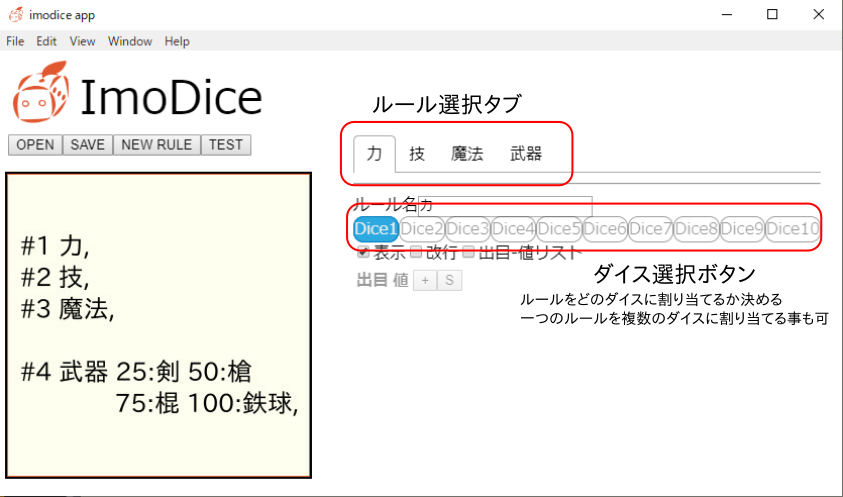

ルールタブ 出目-値リスト
ルールタブの出目-値リストにチェックを入れるとリストが編集できるようになります。
この例では第4ダイスの結果が 1-25 の場合は[剣] 26-50 なら[槍] 51-75 なら[棍] 76-100 なら[鉄球] と整形されます。
テスト
作成したルールはTEST ボタンをクリックすることで試す事ができます。
テストボタンを押すとImoDice は内部的にhttp サーバーを立ち上げ、テストコンテンツをブラウザで開きます。
開かれたブラウザでブックマークレットを実行してルールが正しく動いているか確認してください。
画像の保存
テストがうまくいったらSAVE ボタンで画像を保存します。
その他
ImoDice のソースは
ここにあります。
お友達にも教えてあげて下さいね。